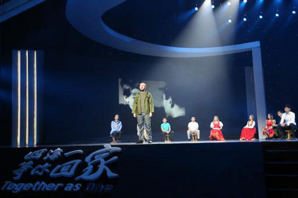
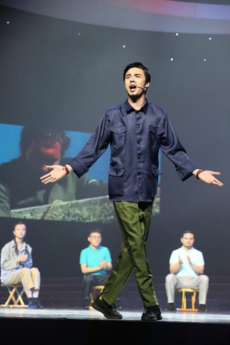
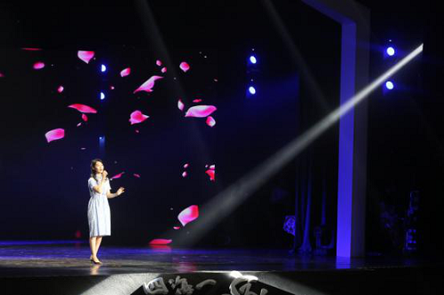
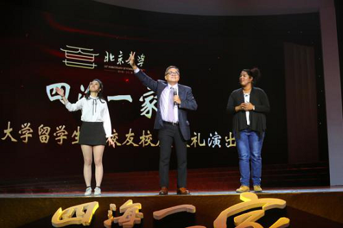

四海一家”外国留学生和校友庆祝北京大学建校120周年献礼演出举行
2018年4月24日晚，“四海一家”外国留学生和校友庆祝北京大学建校120周年献礼演出在百周年纪念讲堂举行，孔子学院总部副总干事国家汉办副主任赵国成、教育部留学服务中心主任程家财、国家留学基金管理委员会副秘书长张宁、北京大学党委副书记叶静漪、北京大学副校长王博、北京大学副校长龚旗煌、北京大学校友会副会长兼国际校友联络会会长吉米、几内亚比绍驻华大使卡林通·卡校友、冰岛驻华全权公使鲍德松校友、前阿尔巴尼亚驻华大使塔希尔校友、北京大学马来西亚校友会会长赖贞煌、德国著名汉学家罗梅君校友等来到现场，与1500多名北大师生、国际校友和校内外嘉宾共同观看了演出。
演出以年代为时间线索，挑选留学生校友中的典型人物为主要叙事者，由在校留学生扮演，融汇情景表演、音乐剧片段、歌舞、朗诵等多种表演形式，以舞台剧的形式呈现出发生在不同历史时期的留学生故事，展示了北京大学外国留学生的独特文化氛围与良好精神风貌，为即将到来的北京大学120岁生日献礼。
故事从上世纪50、60年代拉开序幕，充满浓郁东欧民族气息的独唱《多瑙河之波》《啊朋友们再见》和歌舞《喀秋莎》把在场观众带入到60年前的情境。



在随后的语言类节目“方言课”中，留学生们一口流利的地方方言不仅让观众忍俊不禁，还让大家感到别样的亲切。

70年代的燕园，各国留学生在校园求学的同时，走入农村、走进工厂，积极参加社会实践。留学生来到了“红星公社”，用三句半的形式，讲述着他们在公社里和邻里乡亲们一起生活劳动的经历，期间穿插的《智取威虎山》选段、《报菜名》和诗歌朗诵引起观众阵阵掌声。最后留学生和公社队长一起诉说衷肠，共同演唱《24节气歌》，温情满满，其乐融融。

80年代的北大激荡着青春与活力，第三幕采用歌舞剧的形式演绎大饭厅舞会。不同旋律的中外音乐、特色鲜明的歌舞串烧以及热情似火的舞蹈把气氛引向高潮。


进入90年代，故事发生在北京大学留学生风云人物评选现场，展现了日益丰富的留学生课外生活。
第一位选手是来自加拿大的留学生大山，他和两名来自马来西亚的留学生搭档，操着一口标准且流利的中文，给大家带来精彩有趣的相声表演。相声紧扣校园生活，模仿食堂占座、骑小黄车等趣事，引得观众一阵又一阵的欢笑和尖叫。
第二位选手是曾获全国高校武术冠军的美国留学生芮嗣文，他为大家带来陈式太极拳和中国传统棍术的表演，精湛的拳法、凌厉的棍法表达了一名外国留学生对中国武术的热爱。

第三位选手是来自日本的林光江。一首《我只在乎你》优美深情，高音清亮充满穿透力，深深地打动了在场的每一位观众。

21世纪以来，北大国际化发展进入了新的阶段，外国留学生规模持续扩大，中外融合达到了新的高度。来自泰国、拉美和日本的同学分别呈现了精彩的舞蹈。


大屏幕播放了来自世界各地校友代表的祝福视频。随后，留学生校友代表吉米先生上台，讲述了他青年时代在北大发生的故事，并表演了戏曲《智取威虎山》选段。

演出最后，校园原创音乐《四海一家》歌声响起，全体演职人员上台谢幕，并与到场领导和嘉宾合影留念。